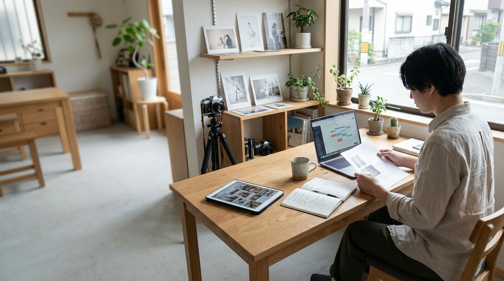
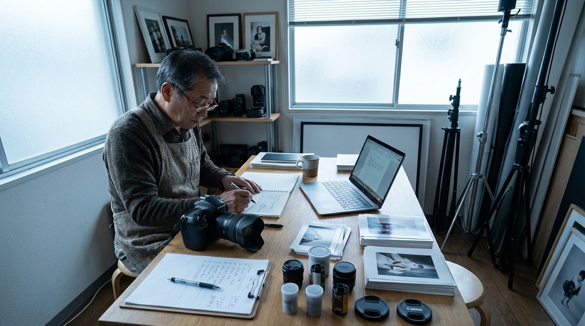

撮影前案内を毎回作り直す
持ち物や集合案内、注意事項を案件ごとに整える負担が大きくなりやすい。

写真・スタジオの接客・制作業務
撮影前案内・見積補足・納品連絡を、接客と制作の流れに沿って整える伴走型 AI コンサル
AI-SABI が、課題整理から文面設計、確認フロー、定着支援まで伴走し、写真・スタジオの文書業務を接客と制作の流れに沿って回る形へ整えます。
接客で起きやすい課題
持ち物や集合案内、注意事項を案件ごとに整える負担が大きくなりやすい。
プラン説明や追加費用の補足文が人によってばらつき、確認に時間がかかりやすい。
納品内容や注意点のまとめに時間がかかり、連絡が遅れやすい。
撮影要望や注意事項が個別メモに残り、別担当へつながりにくい。
接客目線で変える 4 ステップ
撮影前案内、見積補足、納品連絡のどこが重いかを整理します。
まずは効果が見えやすい 1 業務を決めます。
AI が下書きし、スタッフが確認する流れを設計します。
スタジオごとの接客トーンに合わせて調整し、使い続けられる形へ伴走します。
接客目線で変える業務
接客目線で選ばれる 3 つの理由
小さく始めやすい
最初から案件全体を変えるのではなく、撮影前案内や納品連絡など効果が見えやすい業務から始めます。だから、現場でも取り入れやすくなります。

役割分担を明確にする
AI に下書きや整理を任せつつ、お客様に伝わる最終表現はスタッフが仕上げる形にします。そのため、接客トーンを守りながら使えます。
定着まで伴走する
撮影前案内や見積補足の型をスタジオに合わせて整え、担当が変わっても回る状態まで伴走します。そのため、属人化を減らしやすくなります。
運用イメージ
Case 01
Case 02
こんな相談から始められます
準備連絡の負担を減らしたい。
担当ごとの差を減らしながら整えたい。
案件要望を残しやすくしたい。
他サービスとの違い
| AI-SABI | 汎用 AI ツール導入 | 外注代行 | |
|---|---|---|---|
| 着手業務の決め方 | ○ 撮影前案内や納品連絡から優先順を整理 | △ 使い道は担当者判断に寄りやすい | △ 要件整理が先に必要 |
| 接客トーン | ○ スタジオの言い回しに合わせて整える | △ 文体調整は各自対応 | × 自社らしさが残りにくい |
| 引き継ぎ共有 | ○ 案件共有しやすい型まで整える | △ 運用設計は自社対応 | × 外部依存になりやすい |
| 定着支援 | ○ 現場で使う型まで育てる | △ 導入後の浸透に工夫が必要 | × 横展開しにくい |
支援プラン
初期診断
業務改善伴走
定着支援
横展開支援
支援対象業務、伴走期間、必要なサポート内容に応じてご案内します。まずはお問い合わせください。
無料相談をするご利用までの流れ
撮影前案内や見積補足で重い業務をヒアリングします。
最初の 1 業務を決め、改善方針を整理します。
下書き範囲と接客トーンの整え方を決めます。
成果を見ながら別業務や別担当へ広げます。
よくあるご質問
はい。まずは撮影前案内や納品連絡など、導入しやすい 1 業務から始めます。
はい。共通化できる型と案件ごとに変える説明を分けて整えます。
AI は補足文のたたき台整理を支援します。最終的な条件確認や案内内容はスタッフが行う前提で設計します。
大丈夫です。先に課題と運用方針を整理し、その後で必要な使い方を設計します。
対象業務、伴走範囲、期間によって変わるため、固定表示はしていません。お問い合わせ後にご案内します。
お問い合わせ
AI-SABI は、写真・スタジオの文書業務を接客目線で変えるための伴走型コンサルです。AI ツールの紹介だけで終わらず、課題整理から運用設計、実務定着まで支援します。